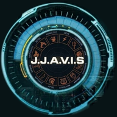
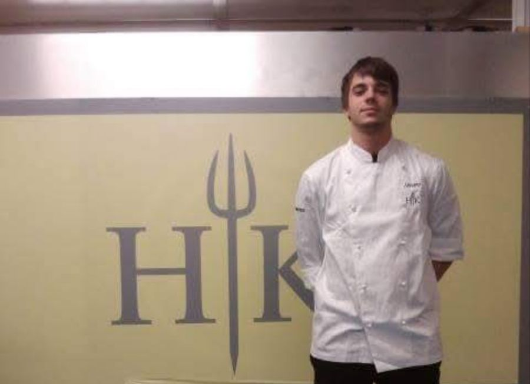
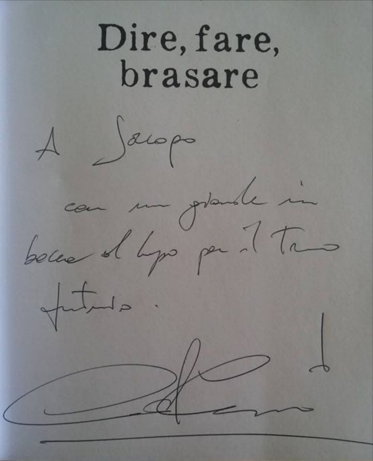
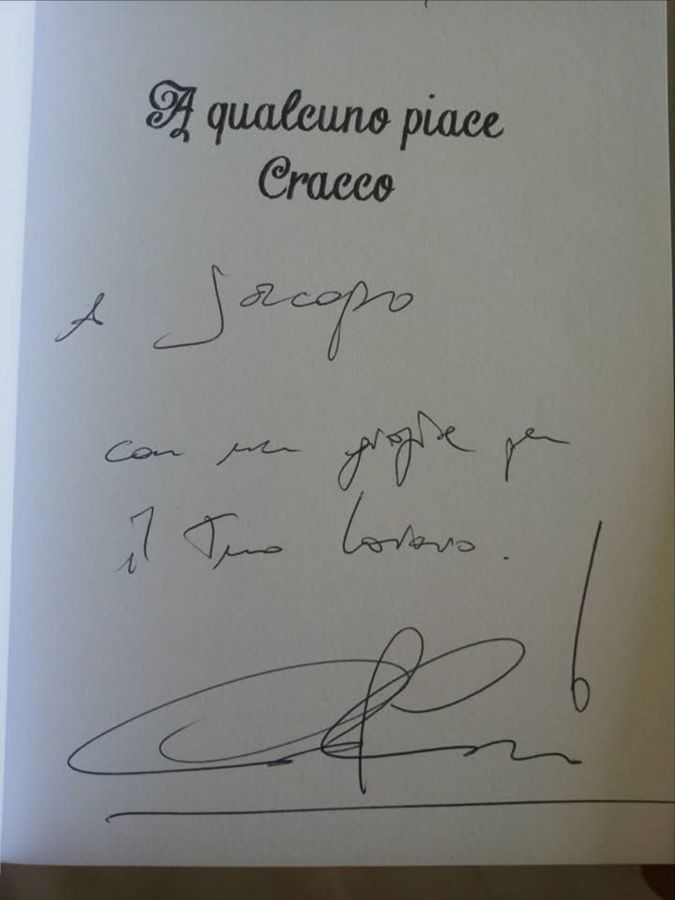
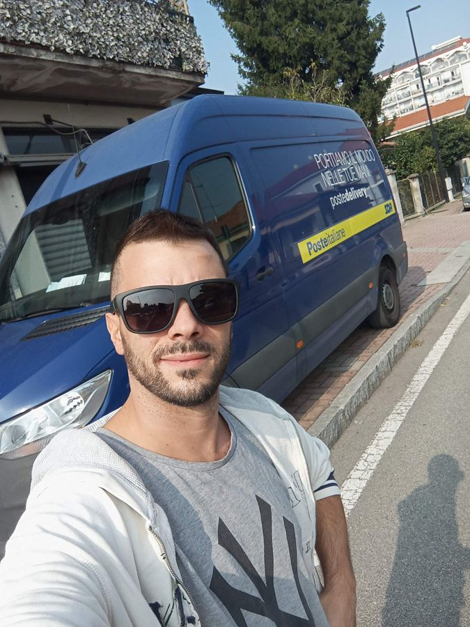
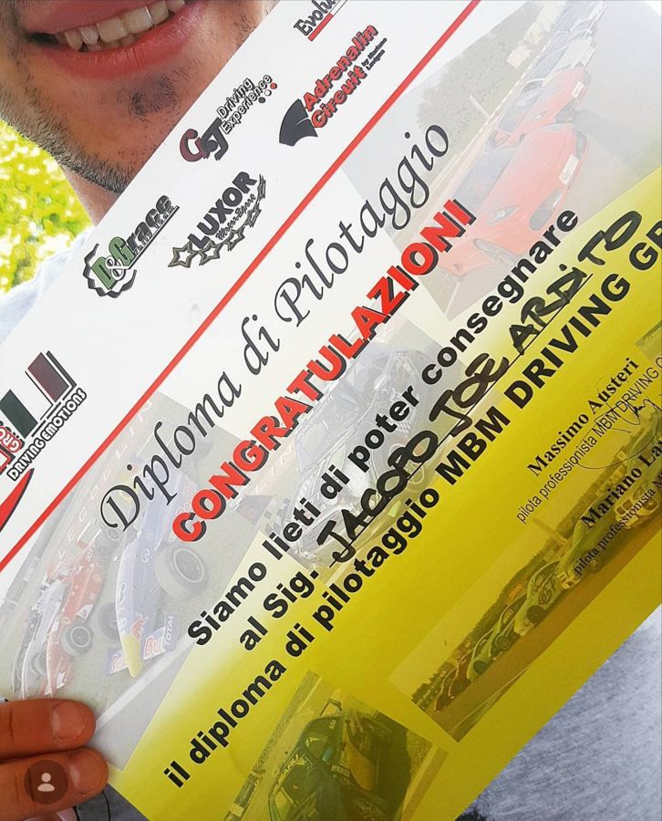

Chi costruisce JJA-VIS.
Sono nato a Milano nel 1993. Se dovessi definirmi con una parola sceglierei risolutore: non so girarmi dall'altra parte davanti a una cosa fatta male, e parlo di una materia solo quando la conosco davvero.
Sono cresciuto nella ditta di elettronica di famiglia, tra schede, componenti e saldatori. Lì ho imparato la precisione, il lavoro in proprio e la curiosità di capire come sono fatte le cose dentro.
A 17 anni la vita mi ha messo davanti scelte da adulto. Le strade facili c'erano; ho scelto di finire gli studi e di stare dritto. In quegli anni ho conosciuto la ragazza che oggi è mia moglie: insieme abbiamo trasformato un periodo difficile in un punto fermo.
Calcio agonistico dai 6 ai 20 anni, fino a un infortunio che mi ha fermato; il nuoto; anni di Muay Thai; un salto nel vuoto di 64 metri dal ponte di Maslenica, in Croazia. Mi hanno insegnato il sangue freddo e a rialzarmi.
Diploma all'Istituto Alberghiero G. Brera, poi le cucine dove un secondo fa la differenza: cuoco di produzione per Magnolia TV a Hell's Kitchen Italia, seconda stagione.

Conservo due libri di Carlo Cracco con le sue dediche:
«A Jacopo, con un grande in bocca al lupo per il tuo futuro.»
«A Jacopo, con un grazie per il tuo lavoro.»


Sei anni da agente immobiliare con Tempocasa, cinque nell'ufficio di Gerenzano: trattative, ascolto, fiducia.
Più di 500.000 km in Italia e all'estero, la Route 66 da Chicago a Los Angeles, tre anni da corriere SDA a 120 fermate al giorno con tutti i 30 punti sulla patente, e il diploma di pilotaggio e controllo avanzato del veicolo con MBM Driving Emotion.


Un anno da tecnico informatico negli uffici postali: computer, POS, scanner, stampanti, da far ripartire subito con la fila davanti.
A 30 anni la licenza di Gestore dei Trasporti internazionale, mentre nasceva mia figlia. Oggi guido Athena Trasporti a Limbiate.
Vedevo ogni giorno quanto tempo si perde nella logistica, e software che non conoscono il lavoro vero. Così, di notte, ho ripreso in mano la mia parte tecnica: con l'intelligenza artificiale come compagna di lavoro sto costruendo JJA-VIS, un assistente personale che conosce chi lo usa e anticipa invece di rispondere. Un'app vera sul telefono, un giro di consegne fino a 150 fermate, migliaia di civici della Brianza mappati, calendario, sveglie, navigatore, radio.
La distanza tra un'idea da film e la realtà è una questione di esecuzione.